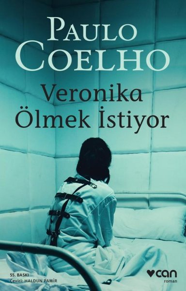
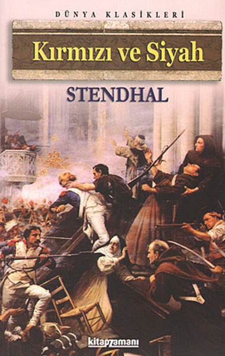
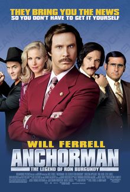

Kitap adı : Açlık
Yazar : Knut Hamsun
Yayınlanma yılı : 1890
Türü : Kurgu, Biyografi, Otobiyografi
Konusu : Yazar olmak hayali ve yazılarını bastırmak amacıyla Kristiania'ya gelen bir yazarın açlıkla, hayatın gerçekleriyle ve hayalleriyle yaptığı mücadeleyi ele almaktadır. Kalemiyle geçinmek isteyen yazar bu savaşta mağlup olmuş, parasız pulsuz kalmıştır. Karşılaştığı zorluklar, çektiği sıkıntılar, açlık ve tüm olumsuzluklarına rağmen amacından vazgeçmeyen olumsuzluklara karşın ahlaki değerlerinden taviz vermemektedir.
Kitap adı : Veronika Ölmek İstiyor
Yazar : Paulo Coelho
Yayınlanma yılı : 1998
Türü : Psikolojik Kurgu
Konusu : Veronica adındaki bir kadının ilaç içerek intihar girişiminde bulunması ve bu girişim sırasında kalbinin rahatsızlaşması sonucu bir haftalık ömrü kalması ve kalan zamanını akıl hastahanesinde nasıl geçirdiği anlatılmaktadır.
Kitap adı : Kızıl ve Kara
Yazar : Henri Beyle Stendhal
Yayınlanma yılı : 1830
Türü : Psikolojik Kurgu
Konusu : Orta sınıftan bir genç olan romanın başkahramanı Julien Sorel, papaz okuluna devam ederken belediye başkanının çocuklarına ders vermeye başlamıştır. Fakat bir müddet sonra belediye başkanının karısı ile dedikodulara yol açan bir ilişkiye girer. Oradan Paris’e giden J. Sorel bu defa da kendisine kollarını açan aristokrat bir ailenin kızı ile aşk yaşamaya başlar. Ama bu aşk onun hayatında çok önemli girdaplar doğuracaktır.
Filmin adı : Man on the Moon
Oyuncular : Jim Carrey, Danny DeVito, Courtney Love
Yayınlanma yılı : 1999
Türü : Drama, Komedi, Biyografi
Konusu : Andy Kaufman, nev-i şahsına münhasır bir komedyendir. Bir gün kendini Amerika'nın ünlü şov programı Saturday Night Live'da bir rol alarak gösterme şansı bulan Andy, George Shapiro isimli bir menajerin ilgisini çeker. Shapiro'nun Andy'ye yaptığı reddedilemez teklif, onun kendi şovunu hazırlaması üzerinedir. Lakin Andy, hiç kimseye benzemeyen bir komedyendir. Zira amacı güldürmekten çok şaşırtmaktır. Andy, seyircilerini gerçeklik ile rol dünyası arasındaki bir ikileme doğru sürükleyecektir.
Filmin adı : Anchorman : The Legend of Ron Burgundy
Oyuncular : Will Ferrell, Paul Rudd, Christina Applegate
Yayınlanma yılı : 2004
Türü : Komedi
Konusu : Ron Burgundy, 70'li yıllarda San Diego'nun en ünlü haber spikerlerinden biridir. Çok yetenekli bir gazeteci olan Veronica Corningstone'un ülkedeki feminizm dalgasıyla birlikte Ron'un yanına atanmasıyla tahtı sallanmaya başlar. Her ne kadar Veronica'yı önemsiz haberlerle uğraşmaya zorlasa da Veronica, mesleğinde ilerlemekte kararlıdır. Ron, muhteşem saçları ve bıyığının yanı sıra, Prompter'dan okuma yeteneğinin bulunduğu televizyon için yetersiz kalabildiğini fark eder.